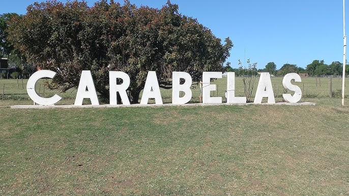
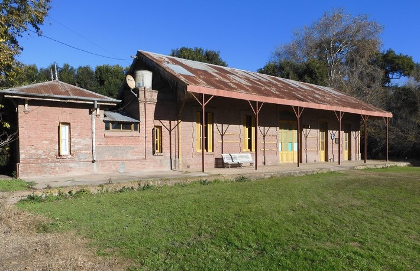
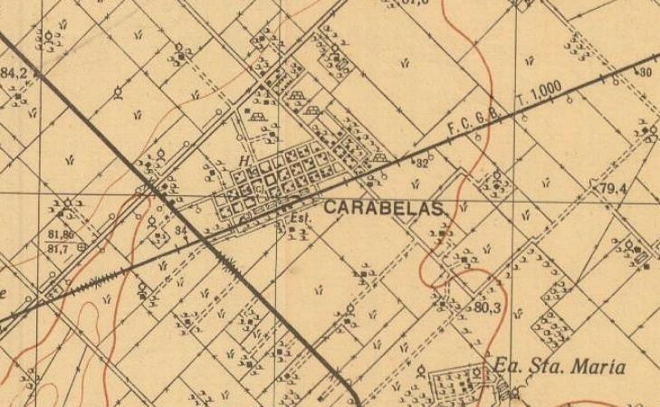

Carabelas, 1910-2025
Carabelas se encuentra en el partido de Rojas, en el norte de la provincia de Buenos Aires. Se ubica sobre la ruta provincial N° 31 pavimentada, a 25 kilómetros al noroeste de la ciudad de Rojas y a 260 kilómetros de la ciudad de Buenos Aires. Poco antes de la construcción de la estación, ya había un pequeño núcleo poblacional, denominado Bellas Flores, ubicado aproximadamente a un kilómetro hacia el norte. El 1º de diciembre de 1910, llega el tren inaugural del tendido de la Compañía General Buenos Aires que unía las ciudades de Pergamino y Vedia creando la estación “Carabelas”. A partir de allí comienza a figurar en la cartografía con éste nombre, desplazando al anterior.
Según Enrique Udaondo en su libro de nomenclatura de estaciones, el nombre Carabelas debe a “las carabelas: Santa Maria, La Pinta y La Niña, que componían la expedición con que Cristóbal Colon descubrió el Nuevo Mundo” Al no haber acta fundacional, se considera la fecha de habilitación de la estación ferroviaria como la de fundación. En el manual de estaciones del Ministerio de Transporte figuraba como estación de segunda categoría, habilitada para pasajeros, encomiendas, carga y hacienda, contando además con telégrafo.
Tras el paso del ferrocarril, comenzó a formarse el pueblo sobre el flanco norte de las vías. Para 1923 ya residían unos 500 habitantes La escuela primaria Nº 2, aparece en 1916. El 6 de mayo de 1923 se funda el primer club, el Club Social y Deportivo Carabelas; el 10 de septiembre de 1937, es fundada la Cooperativa Carabelas Limitada y en 1943 se funda el segundo club, Club Deportivo Unión. Para 1971 se funda la Cooperativa Telefónica y de Agua potable y otros servicios públicos de Carabelas Limitada. Desde un inicio sus pobladores se relacionaron directamente con las actividades agropecuarias de la zona de influencia. Carabelas se ha desarrollado paulatinamente, transformándose en un centro de servicios para una zona rural. En la actualidad, es una de las principales localidades del Partido de Rojas, luego de la ciudad cabecera "Rojas". la cooperativa agropecuaria es una de las empresas más importantes de la región comercializando granos y en el sector alimenticio. Funcionan una Delegación Municipal, Destacamento Policial, la Biblioteca Municipal, una Sala de Primeros Auxilios. La Parroquia se denomina Nuestra Señora de los Ángeles, el Jardín de Infantes Nº 903, la Escuela Nº 2 "Bernardino Rivadavia" y la Escuela Media Nº 2 "Adolfina Valenzuela". La planta urbana ocupa unas 30 manzanas formando un rectángulo, casi todas sus calles están pavimentadas, se alternan construcciones de antigua data, con edificaciones modernas, cuenta con aproximadamente 1.100 habitantes.
